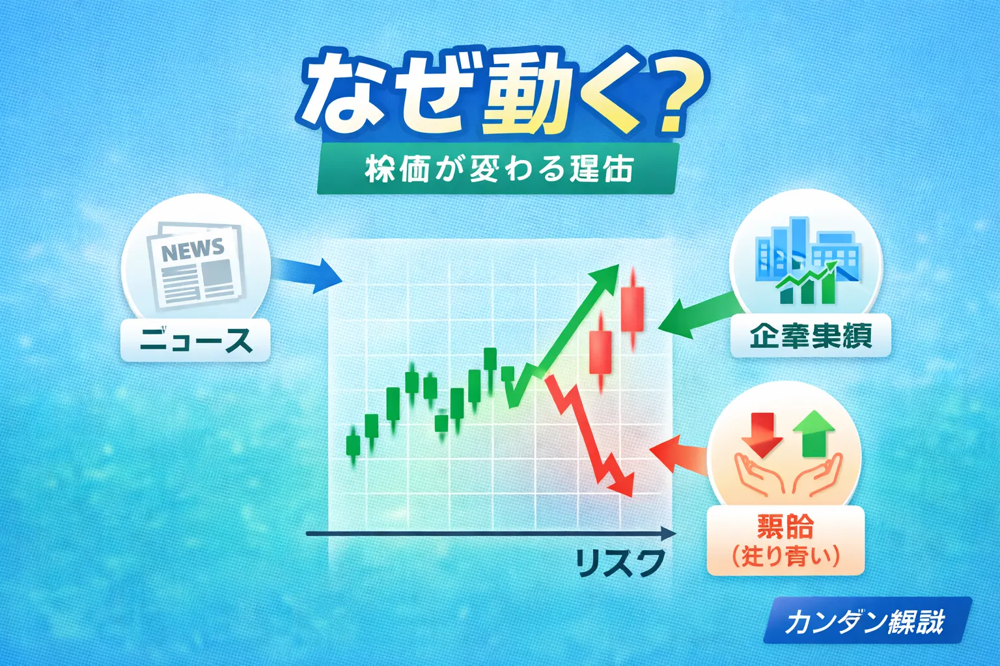

株価はなぜ上下するのか？初心者向けに値動きの理由を解説
株価はなぜ上下するのか？最初に結論をやさしく整理

- 株価は「買いたい人」と「売りたい人」のバランスで動きます
- 企業業績、景気、金利、ニュースなどが値動きに影響します
- 一つの理由だけで動くのではなく、複数の要因が重なることも多いです
「株価って、なぜ毎日上がったり下がったりするの？」
「業績がよい会社なのに、なぜ株価が下がることがあるの？」
こうした疑問を持つ初心者の方は少なくありません。
株価は、単純にいうとその株を買いたい人と売りたい人の力関係で動きます。
ただし、その背景には企業の業績、景気の見通し、金利、為替、ニュース、投資家心理など、さまざまな要素があります。
この記事では、株価が上下する基本的な仕組みを初心者向けに整理しながら、ニュースの見方や考え方のコツまでわかりやすく解説します。
まず押さえたいポイント
株価は「正解が一つある数字」ではなく、その時点の市場参加者の評価が反映された結果です。
そのため、企業の実力だけでなく、期待や不安も値動きに影響します。
株価が上下する一番の基本は需要と供給
- 買いたい人が多いと株価は上がりやすいです
- 売りたい人が多いと株価は下がりやすいです
- 価格は市場での売買の結果として決まります
株価を理解するうえで、まず最初に押さえたいのが需要と供給の考え方です。
その株を買いたい人が多ければ価格は上がりやすく、反対に売りたい人が多ければ価格は下がりやすくなります。
これは日用品の価格と似た考え方ですが、株式市場では特に「将来どうなりそうか」という期待も大きく関わります。
今の業績だけでなく、今後の成長期待が強ければ買いが集まりやすくなることがあります。
そのため、株価は会社の現在地だけでなく、将来への見方も含めて動いていると考えると理解しやすいです。
企業業績や決算は株価にどう影響する？
- 売上や利益が伸びる期待は買い材料になりやすいです
- 業績悪化の懸念は売り材料になりやすいです
- 決算の数字だけでなく、今後の見通しも重要です
株式投資では、企業の売上や利益、今後の成長性がよく注目されます。
たとえば決算でよい数字が出れば、その会社の将来に期待する買いが増えやすくなります。
ただし、単純に「決算がよければ必ず上がる」とは限りません。
すでに市場が好決算を予想していた場合は、発表後に材料出尽くしとして売られることもあります。
初心者の方は、決算を見るときに「今の数字」だけでなく、会社がどのような見通しを出しているか、投資家が何を期待していたのかも合わせて見ると理解しやすくなります。
景気・金利・為替など市場全体の流れも株価を動かす
- 景気がよい見通しなら株全体に買いが入りやすいです
- 金利上昇は株価の重しになることがあります
- 為替の変動は企業によって追い風にも逆風にもなります
個別企業の情報だけでなく、市場全体の空気も株価に強く影響します。
たとえば景気がよくなりそうだと感じられる場面では、企業業績への期待から株全体に買いが入りやすくなります。
一方で、金利が上がる局面では、企業の資金調達コストや投資マネーの流れが変わるため、株価にマイナスに働くことがあります。
また、為替が円安か円高かによって、輸出企業や輸入企業への見方も変わりやすいです。
株価を見るときは、「この会社単体の話なのか」「相場全体の影響なのか」を分けて考えると、値動きの理由を整理しやすくなります。
ニュースや投資家心理で株価が大きく動くこともある
- 好材料のニュースは買いを集めやすいです
- 悪材料や不安材料は売りを誘いやすいです
- 投資家心理が強く働く場面では値動きが大きくなることがあります
株価は理屈だけでなく、人の心理でも動きます。
新商品発表、提携、増配、自社株買いなどは好材料として受け止められやすく、買いが入りやすくなることがあります。
反対に、不祥事、業績下方修正、景気後退懸念などは売り材料として意識されやすいです。
特に相場全体が不安定なときは、少しの悪材料でも大きく反応することがあります。
初心者の方は、ニュースを見たときに「よい話か悪い話か」だけでなく、市場がどう受け止めそうかを意識してみると、株価の動きが少し見えやすくなります。
初心者が株価の上下を見るときの考え方
- 短期の上下だけで一喜一憂しすぎないことが大切です
- 企業の中身と株価の理由を分けて考えると整理しやすいです
- 値動きの理由を一つに決めつけない姿勢が重要です
株価は毎日動くため、初心者のうちは値動きそのものに気を取られやすいです。
ただし、短期の上げ下げだけで判断すると、落ち着いて考えにくくなることがあります。
大切なのは、「なぜ動いたのか」を少しずつ分解して考えることです。
企業の決算なのか、相場全体の流れなのか、ニュースなのかを整理できるようになると、価格を見る目が育ちやすくなります。
初心者が意識したい見方
- 株価の上下だけでなく、企業内容も確認する
- 短期の値動きと長期の成長性を分けて考える
- ニュースを見たら、その影響が一時的か継続的かを考える
- 焦って売買せず、理由を整理してから判断する
※株価の変動にはさまざまな要因があります。ひとつの情報だけで判断しすぎないことが大切です。
株価の仕組みとあわせて読みたい関連記事

株価の上下する理由がわかってくると、次は株式投資の基本やリスクとの向き合い方も理解しやすくなります。
以下の関連記事もあわせてご覧ください。
株式投資を始める準備を進めたい方へ
一般ユーザー目線の体験でおすすめの会社をご紹介
よくある質問（FAQ）
-
Q. 株価はなぜ上がるのですか？
株を買いたい人が売りたい人より多くなると、株価は上がりやすくなります。業績改善期待や好材料のニュースも買いにつながることがあります。 -
Q. 株価はなぜ下がるのですか？
売りたい人が増えて買いたい人が減ると、株価は下がりやすくなります。業績悪化懸念や景気不安、悪材料のニュースも影響します。 -
Q. 業績がよい会社でも株価が下がることはありますか？
はい、あります。すでに期待が株価に反映されていた場合や、市場全体が弱いときは、好決算でも下がることがあります。 -
Q. 初心者は株価の上下をどう見ればよいですか？
短期の上下だけを見るのではなく、企業業績や業界環境、市場全体の流れも合わせて確認することが大切です。 -
Q. ニュースだけで株を買っても大丈夫ですか？
ニュースは参考になりますが、それだけで判断するのは注意が必要です。企業の中身や価格水準も合わせて考えることが重要です。
ご利用にあたっての注意事項
本記事は情報提供を目的としており、投資の勧誘を目的としたものではありません。株式・ETF・投資信託・外国証券等の取引は元本保証がなく、価格変動等により損失が生じる場合があります。株価の上下にはさまざまな要因が関係するため、将来の値動きを保証するものではありません。取引開始前に、契約締結前交付書面や商品説明書、目論見書等を必ずご確認のうえ、ご自身の判断と責任でお取引ください。
最終更新日：2026-03-24